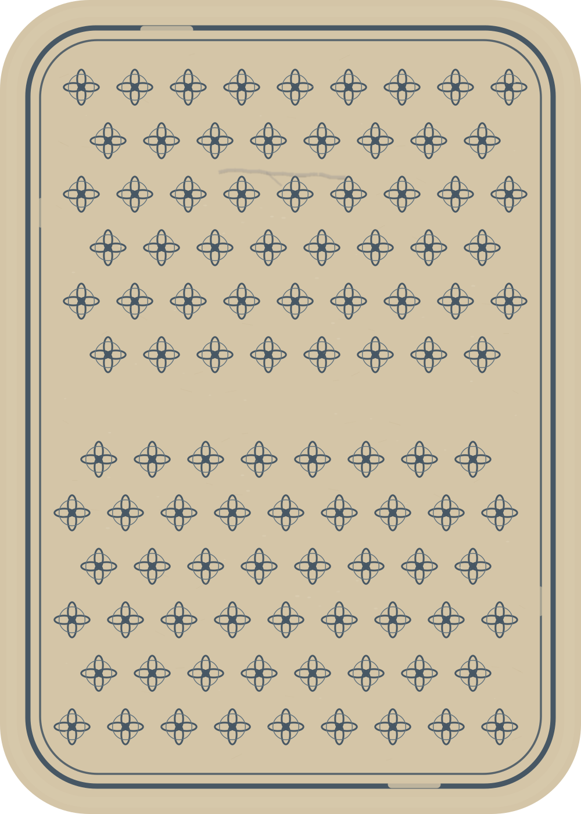
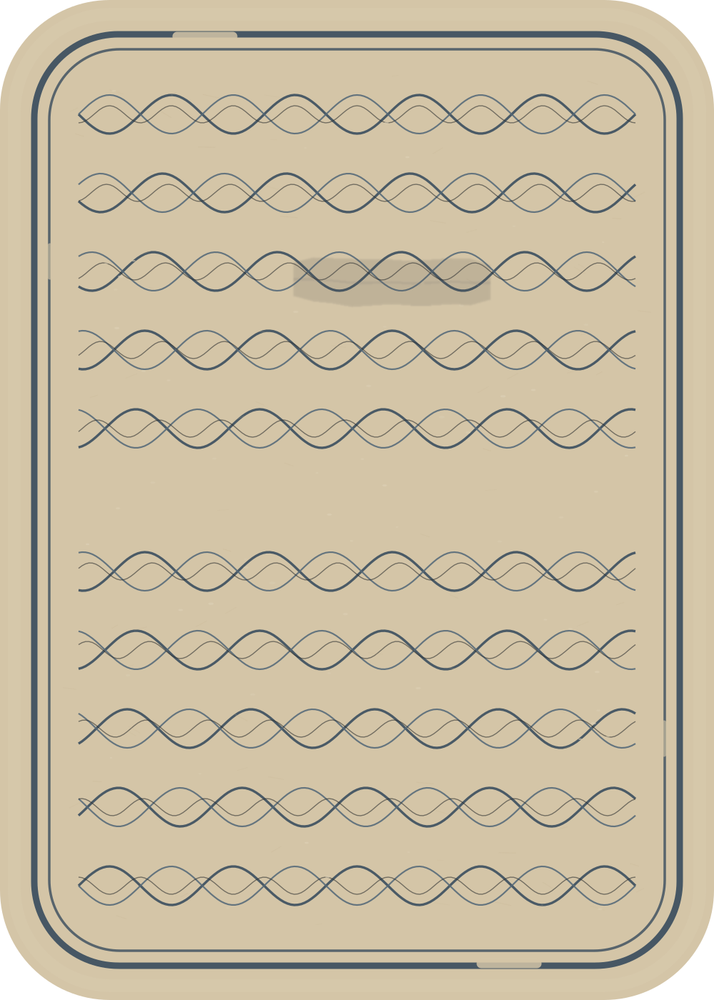
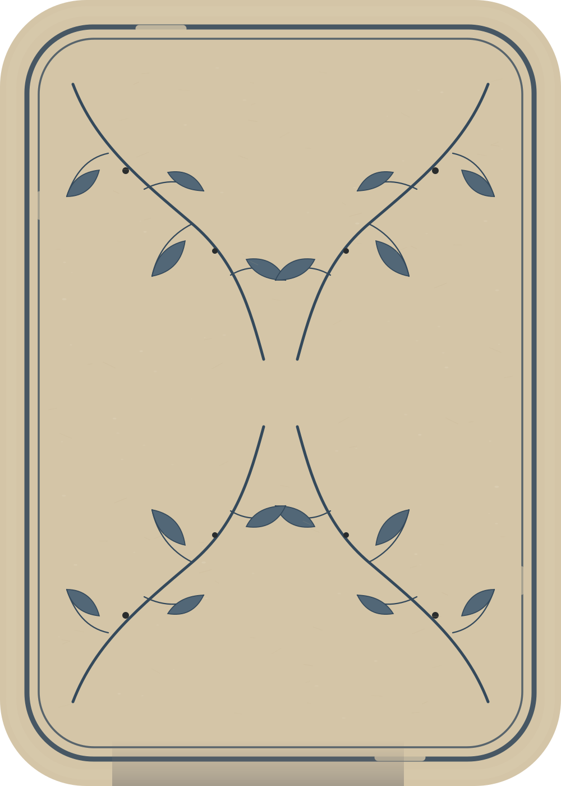
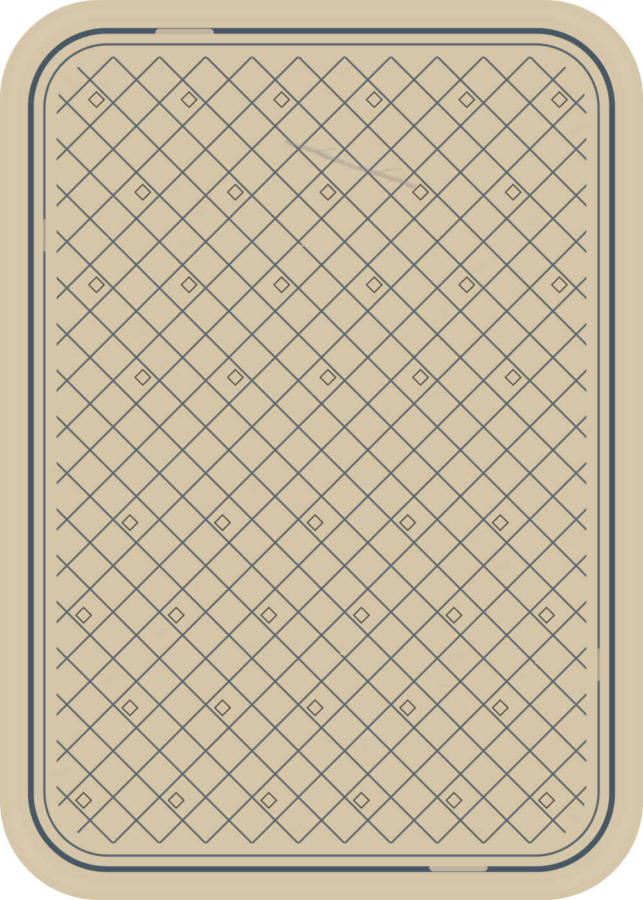
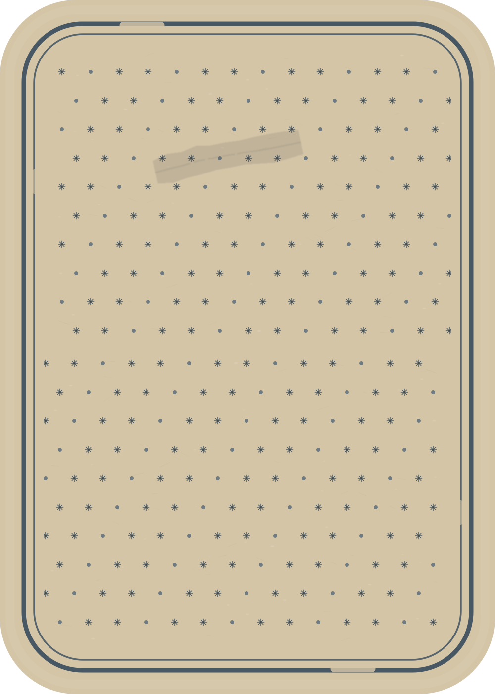
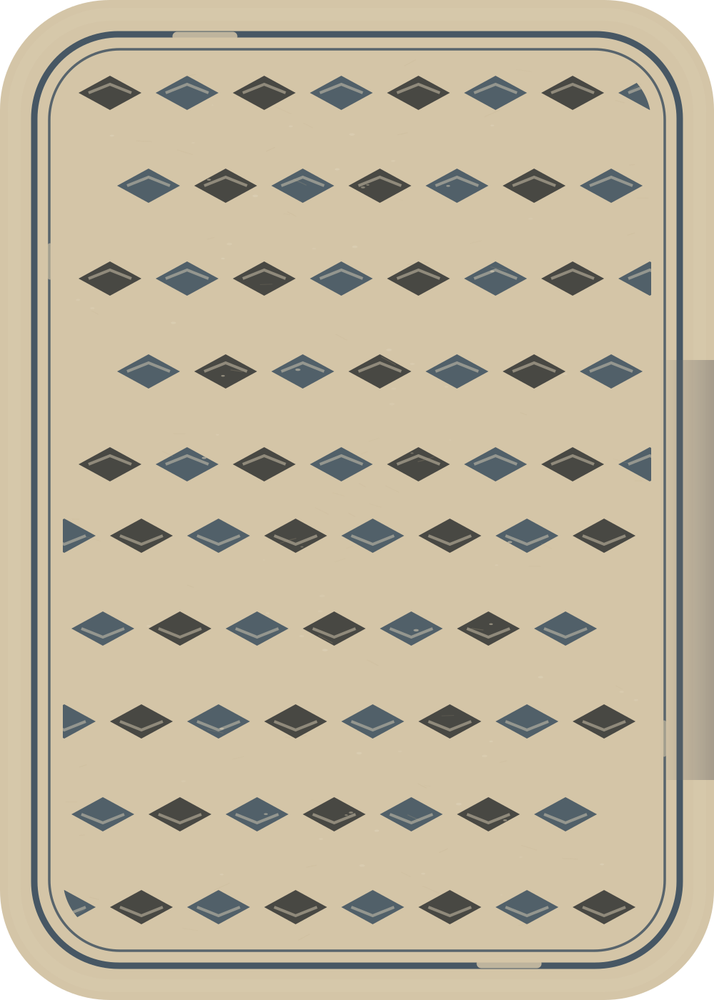
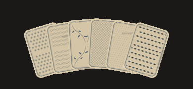
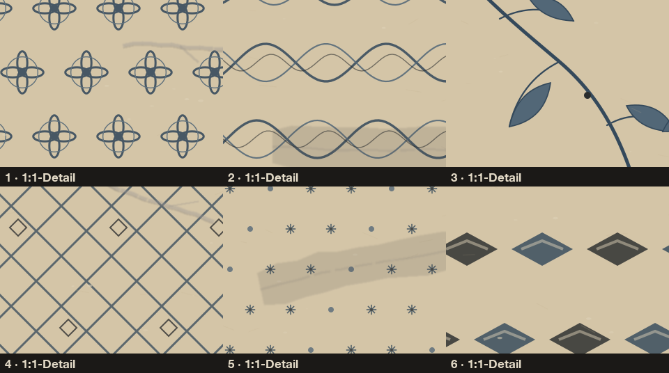
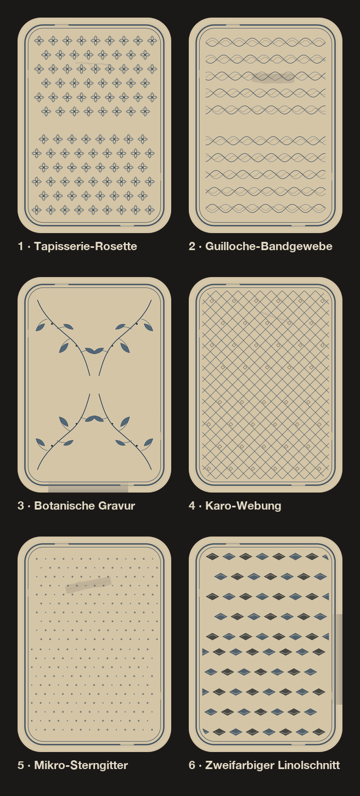

Kleines Tapisserie-/Rosettenrepeat
Eigenständig und stofflich; in der Hand ruhig, ohne Tapetenhaftigkeit.
- Authentizität
- 9.0
- Phone
- 8.5
- Druck
- 9.1
V10.2 · feine Stresslinie
Sechs originale, code-native Druckrichtungen auf warmem, leicht gealtertem Kartenpapier. Alle Grundmuster sind 180°-symmetrisch; Beschriftung liegt ausschließlich außerhalb der Karten.
Empfehlung: 02 Guilloche-Bandgewebe. Es verbindet die höchste historische Glaubwürdigkeit mit klarer Phone-Lesbarkeit und zuverlässiger Zweiton-Druckbarkeit.

Kleines Tapisserie-/Rosettenrepeat
Eigenständig und stofflich; in der Hand ruhig, ohne Tapetenhaftigkeit.
V10.2 · feine Stresslinie

Guillochiertes Bandgewebe
Beste Balance: historisch glaubwürdig, unverwechselbar und mobil klar.
V10.2 · matter Reparaturfilm

Feine botanische Gravur ohne Kitsch
Sehr authentisch und charaktervoll; verliert im kleinsten Fächer etwas Linie.
V10.2 · untere Kantenkompression

Kompakte Karo-Webung
Am klarsten im Phone-Fächer; das Poch-Karo bleibt reine Webstruktur.
V10.2 · verzweigte Stresslinie

Ruhiges Mikro-Stern-/Punktgitter
Leise und robust druckbar; bewusst weniger erzählerisch als 1, 2 und 3.
V10.2 · matter Reparaturfilm

Zweifarbiger historischer Linolschnitt
Kräftigster eigener Charakter; etwas rustikaler als der Favorit.
V10.2 · rechte Kantenkompression


